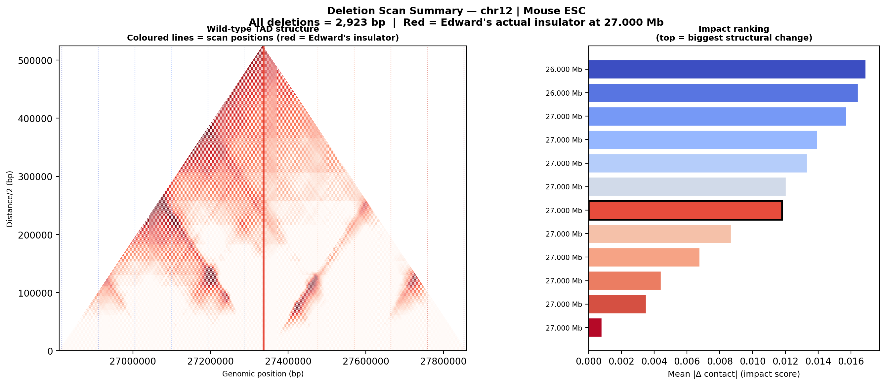
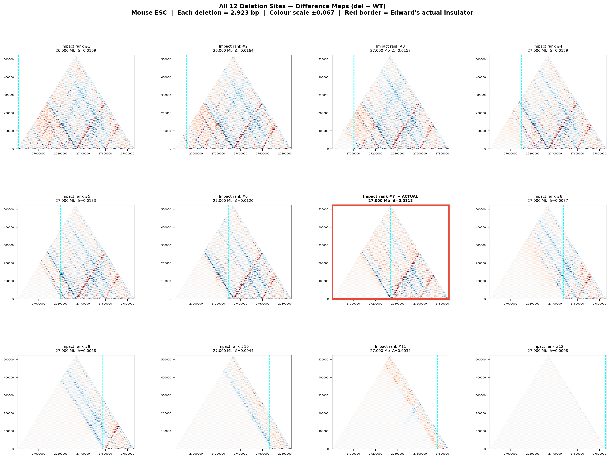

chr12 | Mouse ESC (EFO:0004038) | mm10 |
12 deletion sites × 2,923 bp each | Generated: 2026-02-18 19:02
Hypothesis: Deletions at a TAD boundary cause the largest structural
change (TADs merge); deletions within a TAD body cause little change. Method: Predict WT once; for each of 12 evenly-spaced positions,
simulate a 2,923-bp deletion and compare to WT using three metrics. Edward's actual insulator: chr12:27,333,532–27,336,455
(highlighted in red throughout).
Metrics explained
• Mean |Δ contact| — total reorganisation of the contact map;
higher = deletion caused more structural change.
• Cross-TAD contact gain — average change in contacts across the
deletion site; positive = the two domains are merging.
• Insulation weakening — how much the local boundary strength
decreases; positive = boundary is lost.
Impact Ranking Table
Rank
Centre (bp)
Deletion range
Mean |Δ contact|
Cross-TAD gain
Ins. weakening
#1
26,815,676
26,815,676–26,818,599
0.01690
+0.00082
+0.00378
#2
26,909,831
26,909,831–26,912,754
0.01643
+0.00439
-0.00006
#3
27,003,987
27,003,987–27,006,910
0.01572
+0.00217
+0.00215
#4
27,098,142
27,098,142–27,101,065
0.01394
-0.00113
+0.00671
#5
27,192,298
27,192,298–27,195,221
0.01331
-0.00194
+0.00270
#6
27,286,453
27,286,453–27,289,376
0.01204
-0.00410
-0.00711
#7
27,334,993
27,334,993–27,337,916
0.01182 ⭐ ACTUAL
+0.00203
-0.02591
#8
27,474,764
27,474,764–27,477,687
0.00868
-0.00548
-0.00712
#9
27,568,920
27,568,920–27,571,843
0.00676
-0.00672
-0.02036
#10
27,663,075
27,663,075–27,665,998
0.00440
-0.00173
-0.00530
#11
27,757,231
27,757,231–27,760,154
0.00350
+0.00603
+0.01670
#12
27,851,387
27,851,387–27,854,310
0.00079
-0.00614
-0.00073
Summary: WT Structure + Impact Ranking
Left: WT triangle TAD plot with all scan positions marked. Right: sites ranked by impact score.
Sensitivity Profile (all 3 metrics)
Three impact metrics at each scanned position. Red = Edward's actual insulator. Higher bars = bigger structural effect.
Triangle TAD Gallery (selected sites)
Each panel shows the difference map (deletion − WT) as a rotated 45°
triangle. TADs appear as triangles; the insulator is the valley between them.
Red border = actual insulator. Orange = highest-impact non-insulator.
Blue = interior controls. Cyan dashed lines mark the deletion boundaries.
Triangle TAD difference views for selected deletion sites.
All 12 Sites — Difference Map Montage
All scanned sites on a single shared colour scale. Compare the spatial pattern
of contact changes across sites. Red border = Edward's actual insulator.
All 12 deletion sites on a shared colour scale.